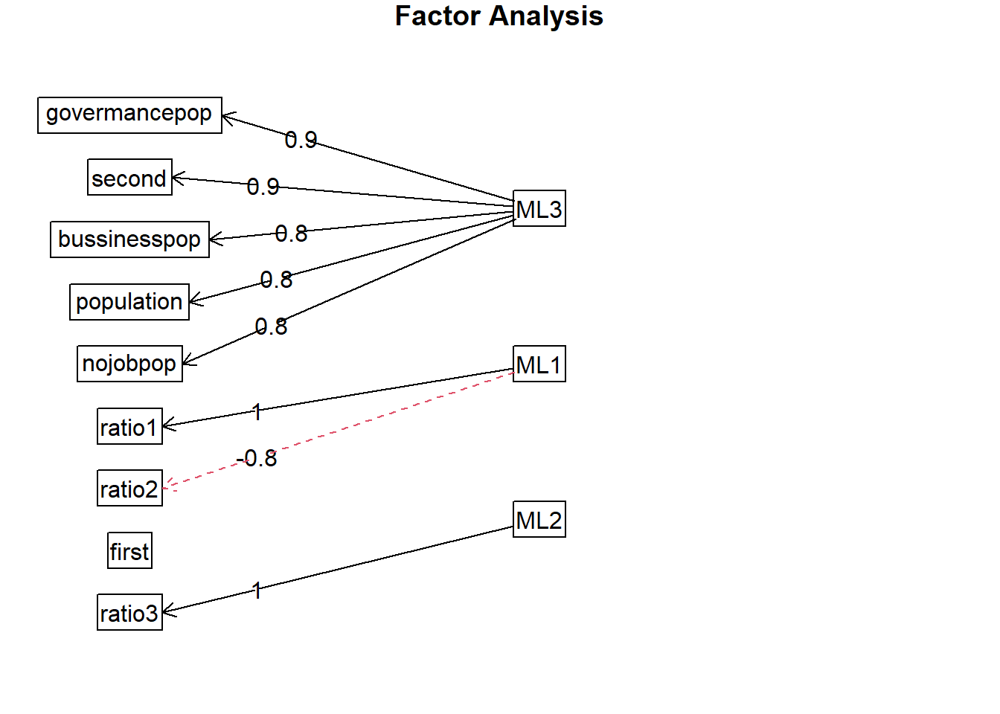

第 13 章 Factor Analysis
本篇是第十三章，内容是因子分析。
13.1 因子分析概念
因子分析是一种数据简化的技术。它通过研究众多变量之间的内部依赖关系，探求观测数据中的基本结构，并用少数几个假想变量来表示其基本的数据结构。这几个假想变量能够反映原来众多变量的主要信息。原始的变量是可观测的显在变量，而假想变量是不可观测的潜在变量，称为因子。即一种用来在众多变量中辨别、分析和归结出变量间的相互关系并用简单的变量（因子）来描述这种关系的数据分析方法。
寻求基本结构
- 通过因子分析，找出几个较少的有实际意义的因子，反映出原来数据的基本结构。
- 通常找出的这组观察不到的因子概括了原始的变量的大多数信息。
数据简化
- 强相关问题会对分析带来困难。
- 通过因子分析，可以用所找出的少数几个因子代替原来的变量做回归分析、聚类分析、判别分析等。
因子分析的用途
- 产生新的、更少的变量以便为后续的回归和其他分析做基础。
- 识别概念或产品的基本感知和特性。
- 改善市场研究领域多元测量的结构与方法。
13.2 因子分析模型
数学模型：设\(X_i(i=1,2,\cdots,p)\)p个变量，如果表示为：
\[X_i=\mu_i+a_{i1}F_1+\cdots+a_{im}F_m+\varepsilon_i(m\le p)\]
或
\[\begin {bmatrix} X_1\\X_2\\\vdots\\X_p \end {bmatrix}=\begin {bmatrix} \mu_1\\\mu_2\\\vdots\\\mu_p \end {bmatrix}+\begin {bmatrix} \alpha_{11}&\alpha_{12}&\cdots&\alpha_{1m}\\\alpha_{21}&\alpha_{22}&\cdots&\alpha_{2m}\\\vdots&\vdots&&\vdots\\\alpha_{p1}&\alpha_{p2}&\cdots&\alpha_{pm} \end {bmatrix}\begin {bmatrix} F_1\\F_2\\\vdots\\F_m \end {bmatrix}+\begin{bmatrix} \varepsilon_1\\ \varepsilon_2\\\vdots\\ \varepsilon_p \end {bmatrix}\]
或
\[X-\mu=AF+\varepsilon\]
\(F_1,F_2,\cdots,F_m\)称为公共因子,是不可观测的变量，它们的系数称为因子载荷。\(\varepsilon_i\)是特殊因子，是不可能被前m个公共因子包含的部分。并且满足：\(cov(F,\varepsilon)=0\)，即\(F,\varepsilon\)不相关；
\[D(F)=\begin {bmatrix} 1 & & & \\&1&&&\\&&\ddots&\\&&&1 \end {bmatrix}=I\]
即\(F_1,F_2,\cdots,F_m\)互不相关，方差为1。
\[D(\varepsilon)=\begin {bmatrix}\sigma_1^2&&&\\&\sigma_w^2&&&\\&&\ddots&\\&&&\sigma_p^2\end {bmatrix}\]
即\(\varepsilon_i\sim N(0,\sigma_i^2)\)互不相关，方差不一定相等。
用矩阵的方式表达
\[X-\mu=AF+\varepsilon\]
\[E(F)=0\]
\[E(\varepsilon)=0\]
\[Var(F)=1\]
\[cov(F,\varepsilon)=E(F\varepsilon')=\begin {pmatrix}E(F_1\varepsilon_1)&E(F_1\varepsilon_2)&\cdots&E(F_1\varepsilon_p)\\E(F_2\varepsilon_1)&E(F_2\varepsilon_2)&\cdots&E(F_2\varepsilon_p)\\\vdots&\vdots&&\vdots\\E(F_p\varepsilon_1)&E(F_p\varepsilon_2)&\cdots&E(F_p\varepsilon_p) \end {pmatrix}=0\]
\[Var(\varepsilon)=diag(\sigma_1^2,\sigma_2^2,\cdots,\sigma_p^2)\]
因子分析模型的性质
（1）原始变量X的协方差矩阵的分解
\[\Sigma_x=AA'+D\]
A是因子模型的系数
\[Var(\varepsilon)=D=diag(\sigma_1^2,\sigma_2^2,\cdots,\sigma_p^2)\]
D的主对角线上的元素值越小，则公共因子共享的成分越多。
（2）模型不受计量单位的影响。
（3）因子载荷不是惟一的：设T为一个p×p的正交矩阵，令\(A^*=AT， F^*=T'F\)也是一个满足因子模型条件的因子载荷。
因子载荷矩阵中的统计特征
- 因子载荷\(a_{ij}\)是第i个变量与第j个公共因子的相关系数。
- 变量\(X_i\)的共同度是因子载荷矩阵的第i行的元素的平方和。记为\(h_i^2=\sum_{i=1}^ma_{ij}^2\)所有的公共因子和特殊因子对变量\(X_i\)的贡献为1。如果\(\sum_{i=1}^ma_{ij}^2\)非常靠近1， \(\sigma_i^2\)非常小，则因子分析的效果好，从原变量空间到公共因子空间的转化性质好。
- 因子载荷矩阵中各列元素的平方和\(S_j=\sum_{i=1}^pa_{ij}^2\)\(称为\)\(F_j(j=1,2,\cdots,m)\)对所有的\(X_i\)的方差贡献和。衡量\(F_j\)的相对重要性。
13.3 因子载荷矩阵的估计方法
- 主成分分析法：设随机向量\(x=(x_1,x_2,\cdots,x_p)'\)的均值为\(\mu\)，协方差为\(\Sigma\)，\(\lambda_1\ge\lambda_2\ge\cdots\ge\lambda_p\ge0\)为\(\Sigma\)的特征根，\(u_1,u_2,\cdots,u_p\)为对应的标准化特征向量，则：
\[\Sigma=U\begin {bmatrix}\lambda_1&&&\\&\lambda_2&&\\&&\cdots&\\&&&\lambda_p \end {bmatrix}U'=AA'+D=\begin {bmatrix}\sqrt\lambda_1u_1&\sqrt\lambda_2u_2&\cdots&\sqrt\lambda_pu_p \end {bmatrix}\begin {bmatrix}\sqrt\lambda_1u_1'\\\sqrt\lambda_2u_2'\\\vdots\\\sqrt\lambda_pu_p' \end {bmatrix}+D\]
上式给出的\(\Sigma\)表达式是精确的，然而，它实际上是毫无价值的，因为我们的目的是寻求用少数几个公共因子解释，故略去后面的p-m项的贡献。上式有一个假定：模型中的特殊因子是不重要的，因而从的\(\Sigma\)的分解中忽略了特殊因子的方差。确定因子个数（特征根大于1所对应的特征向量；碎石原则：把特征根从大到小排列，把特征根减小速度变缓的特征根都删掉）。
- 主因子法：主因子方法是对主成分方法的修正，假定我们首先对变量进行标准化变换。则\(R=AA'+D\)$ $\(^{\ast}=AA'=R-D\)，称\(R^{\ast}\)为约相关矩阵，\(R^{\ast}\)对角线上的元素是\(h_i^2\)，而不是1。
\[R^{\ast}=R-\hat D=\begin {bmatrix}\hat h_1^2&r_{12}&\cdots&r_{1p}\\r_{21}&\hat h_2^2&\cdots&r_{2p}\\\vdots&\vdots&&\vdots\\r_{p1}&r_{p2}&\cdots&\hat h_p^2 \end {bmatrix}\]
直接求\(R^{\ast}\)的前p个特征根和对应的正交特征向量。得如下的矩阵：
\[A=\begin {bmatrix}\sqrt{\lambda_1^{\ast}}u_1^{\ast}&\sqrt{\lambda_2^{\ast}}u_2^{\ast}&\cdots&\sqrt{\lambda_p^{\ast}}u_p^{\ast} \end {bmatrix}\]
\(R^{\ast}\)特征根：\(\lambda_1^{\ast}\ge\lambda_2^{\ast}\ge\cdots\ge\lambda_p^{\ast}\ge0\)，正交特征向量：\(u_1^{\ast},u_2^{\ast},\cdots,u_p^{\ast}\)。
当特殊因子\(\varepsilon_i\)的方差已知：
\[R^{\ast}=R-\begin {bmatrix}\sigma_1^2&&&\\&\sigma_2^2&&\\&&\ddots&\\&&&\sigma_p^2 \end {bmatrix}=\begin {bmatrix}\sqrt{\lambda_1^{\ast}}u_1^{\ast}&\sqrt{\lambda_2^{\ast}}u_2^{\ast}&\cdots&\sqrt{\lambda_p^{\ast}}u_p^{\ast} \end {bmatrix}\begin {bmatrix}\sqrt{\lambda_1^{\ast}}u_1^{'\ast}\\\sqrt{\lambda_2^{\ast}}u_2^{'\ast}\\\vdots\\\sqrt{\lambda_p^{\ast}}u_p^{'\ast} \end {bmatrix}\]
\[A=\begin {bmatrix}\sqrt{\lambda_1^{\ast}}u_1^{\ast}&\sqrt{\lambda_2^{\ast}}u_2^{\ast}&\cdots&\sqrt{\lambda_m^{\ast}}u_m^{\ast}\end {bmatrix}\]
\[D=\begin {pmatrix}1-\hat h_1^2&&0\\&\ddots&\\0&&1-\hat h_p^2 \end {pmatrix}\]
在实际的应用中，个性方差矩阵一般都是未知的，可以通过一组样本来估计。估计的方法有如下几种：
首先，求\(h_i^2\)的初始估计值，构造出\(R^*\)。
（1）取\(h_i^2=1\)，在这个情况下主因子解与主成分解等价；
（2）取\(h_i^2=R_i^2\)，\(R_i^2\)为\(x_i\)与其他所有的原始变量\(x_j\)的复相关系数的平方，即\(x_i\)对其余的p-1个\(x_j\)的回归方程的判定系数，这是因为xi与公共因子的关系是通过其余的p-1个\(x_j\)的线性组合联系起来的；
（3）取\(\hat h_i^2=max\left|r_{ij}\right|(j\neq i)\)，这意味着取\(x_i\)与其余的\(x_j\)的简单相关系数的绝对值最大者；
（4）取\(h_i^2=\frac{1}{p-1}\sum_{j=1,j\neq i}^pr_{ij}\)，其中要求该值为正数。
（5）取\(h_i^2=1/r^{ii}\)，其中\(r^{ii}\)是\(R^{-1}\)的对角元。
（6） 极大似然估计法：如果假定公共因子F和特殊因子\(\varepsilon\)服从正态分布，那么可以得到因子载荷和特殊因子方差的极大似然估计。设\(x_1,x_2,\cdots,x_n\)为来自正态总体\(N_p(\mu,\Sigma)\)的随机样本。
\[\Sigma=AA'+\Sigma_{\varepsilon}\]
\[\begin {aligned} L(\hat \mu,\hat A,\hat D)&=f(X)=f(X_1)\cdot f(X_2)\cdots f(X_n)\\&=\prod_{i=1}^n(2\pi)^{-p/2}\left |\Sigma\right|^{1/2}exp\begin {bmatrix}-\frac{1}{2}(x_i-\mu)'\Sigma^{-1}(x_i-\mu) \end {bmatrix}\\&=\begin {bmatrix}(2\pi)^p\left |\Sigma \right |^{-n/2} \end {bmatrix}exp\begin {bmatrix}-\frac{1}{2}\sum_{i=1}^n(X_i-\mu)'\Sigma^{-1}(X_i-\mu) \end {bmatrix} \end {aligned}\]
用数值极大化的方法可以得到极大似然估计。
13.4 因子旋转（正交变换）
旋转因子的目的：因子分析的目的不仅仅是要找出公共因子以及对变量进行分组，更重要的是要知道每个公共因子的意义，以便进行进一步的分析。如果每个公共因子的含义不清，则不便于进行实际背景的解释。初始因子的综合性太强，难以找出因子的实际意义。由于因子载荷阵是不唯一的，所以可以对因子载荷阵进行旋转，使因子载荷阵的结构简化，使其每列或行的元素平方值向0和1两极分化。
旋转方法：设\(\Gamma\)正交矩阵，做正交变换\(B=A\Gamma\)。
- 变换后各变量的共同度不会发生变化。
- 变换后各因子的贡献会发生变化。
三种主要的正交旋转法。
- 方差最大法L：方差最大法从简化因子载荷矩阵的每一列出发，使和每个因子有关的载荷的平方的方差最大。当只有少数几个变量在某个因子上有较高的载荷时，对因子的解释最简单。方差最大的直观意义是希望通过因子旋转后，使每个因子上的载荷尽量拉开距离，一部分的载荷趋于\(\pm1\)，另一部分趋于0。
\[A=\begin {bmatrix}a_{11}&a_{12}\\a_{21}&a_{22}\\\vdots&\vdots\\a_{p1}&a_{p2} \end {bmatrix}\]
\[X_1=a_{11}F_1+a_{12}F_2\]\[X_2=a_{21}F_1+a_{22}F_2\]\[\cdots\]\[X_p=a_{p1}F_1+a_{p2}F_2\]
设旋转矩阵：\(T=\begin {pmatrix}\cos\varphi&-\sin\varphi\\\sin\varphi&\cos\varphi \end {pmatrix}\)，则
\[\begin {aligned}B&=AT=A\begin {pmatrix}\cos\varphi&-\sin\varphi\\\sin\varphi&\cos\varphi \end {pmatrix}\\&=\begin {pmatrix}a_{11}\cos\varphi+a_{12}\sin\varphi&-a_{11}\sin\varphi+a_{12}\cos\varphi\\\vdots&\vdots\\a_{p1}\cos\varphi+a_{p2}\sin\varphi&-a_{p1}\sin\varphi+a_{p2}\cos\varphi \end {pmatrix}\\&=\begin {pmatrix}a_{11}^{\ast}&a_{12}^{\ast}\\\vdots&\vdots\\a_{p1}^{\ast}&a_{p2}^{\ast} \end {pmatrix} \end {aligned}\]
令\(d_{ij}=\frac{a_{ij}^{\ast}}{h_i},i=1,2,\cdots,p;j=1,2\)，\(\bar d_j=\frac{1}{p}\sum_{i=1}^pd_{ij}^2\)（这是列和），简化准则为：\(V(\theta)=\sum_{j=1}^m\sum_{i=1}^p(d_{ij}^2-\bar d_j)^2=max\)，即：\(V_1+V_2+V_3+\cdots+V_m=max\)。
令\(\frac{\partial V}{\partial \theta}=0\)，则可以解出\(\theta_0\)，旋转矩阵为：\(T=\begin {pmatrix}\cos\theta_0&-\sin\theta_0\\\sin\theta_0&\cos\theta_0 \end {pmatrix}\)
- 四次方最大法：四次方最大旋转是从简化载荷矩阵的行出发，通过旋转初始因子，使每个变量只在一个因子上有较高的载荷，而在其它的因子上尽可能低的载荷。 如果每个变量只在一个因子上有非零的载荷，这时的因子解释是最简单的。四次方最大法通过使因子载荷矩阵中每一行的因子载荷平方的方差达到最大。简化准则为：\(Q=\sum_{i=1}^p\sum_{j=1}^m(b_{ij}^2-\frac{1}{m})^2=max\)
\[\begin {aligned} Q&=\sum_{i=1}^p\sum_{j=1}^m(b_{ij}^2-\frac{1}{m})^2=\sum_{i=1}^p\sum_{j=1}^m(b_{ij}^4-2\frac{1}{m}b_{ij}^2+\frac{1}{m^2})\\&=\sum_{i=1}^p\sum_{j=1}^m(b_{ij}^4-2\sum_{i=1}^p\sum_{j=1}^m\frac{1}{m}b_{ij}^2+\sum_{i=1}^p\sum_{j=1}^m\frac{1}{m^2})\\&=\sum_{i=1}^p\sum_{j=1}^m(b_{ij}^4-2\sum_{i=1}^p\sum_{j=1}^m\frac{1}{m}b_{ij}^2+\sum_{i=1}^p\sum_{j=1}^m\frac{1}{m^2})\\&=\sum_{i=1}^p\sum_{j=1}^m(b_{ij}^4-2+\frac{p}{m}) \end {aligned}\]
最终的简化准则为：\(Q=\sum_{i=1}^p\sum_{j=1}^mb_{ij}^4=MAX\)
- 等量最大法：等量最大法把四次方最大法和方差最大法结合起来求Q和V的加权平均最大。最终的简化准则为：\(E=\sum_{i=1}^p\sum_{j=1}^mb_{ij}^4-\gamma\sum_{j=1}^m(\sum_{i=1}^pb_{ij}^2)^2/p=MAX\)，权数\(\gamma\)等于\(m/2\)，因子数有关。
13.5 因子得分
当解决了用一组公共因子的线性组合来表示一组观测变量后，有时我们需要使用这些因子做其他的研究。比如把得到的因子作为自变量来做回归分析，对样本进行分类或评价，这就需要我们对公共因子进行测度，即给出公共因子的值。
因子得分
因子分析的数学模型：
\[\begin {bmatrix}X_1\\X_2\\\vdots\\X_p \end {bmatrix}=\begin {bmatrix}\alpha_{11}&\alpha_{12}&\cdots&\alpha_{1m}\\\alpha_{21}&\alpha_{22}&\cdots&\alpha_{2m}\\\vdots&\vdots&&\vdots\\\alpha_{p1}&\alpha_{p2}&\cdots&\alpha_{pm} \end {bmatrix}\begin {bmatrix}F_1\\F_2\\\vdots\\F_p \end {bmatrix}\]
原变量被表示为公共因子的线性组合，当载荷矩阵旋转之后，公共因子可以做出解释，通常的情况下，我们还想反过来把公共因子表示为原变量的线性组合。因子得分函数：\(F_j=\beta_{j1}X_1+\cdots+\beta_{jp}X_p, j=1,\cdots,m\)。可见，要求得每个因子的得分，必须求得分函数的系数，而由于p>m，所以不能得到精确的得分，只能通过估计。
巴特莱特因子得分(加权最小二乘法）
把\(x_i-\mu_i\)看作因变量；把因子载荷矩阵\(\begin {bmatrix}\alpha_{11}&\alpha_{12}&\cdots&\alpha_{1m}\\\alpha_{21}&\alpha_{22}&\cdots&\alpha_{2m}\\\vdots&\vdots&&\vdots\\\alpha_{p1}&\alpha_{p2}&\cdots&\alpha_{pm} \end {bmatrix}\)看成自变量的观测；把某个个案的得分\(F_j\)看作最小二乘法需要求的系数。
\[\begin {cases}x_{i1}-\mu_1=a_{11}f_1+a_{12}f_2+\cdots+a_{1m}f_m+\varepsilon_1\\x_{i2}-\mu_2=a_{21}f_1+a_{22}f_2+\cdots+a_{2m}f_m+\varepsilon_2\\\cdots\\x_{ip}-\mu_p=a_{p1}f_1+a_{p2}f_2+\cdots+a_{pm}f_m+\varepsilon_p \end {cases}\]
由于特殊因子的方差相异，所以用加权最小二乘法求得分，每个个案作一次，要求出所有样品的得分，需要作n次。
\[\sum_{j=1}^p[(x_i-\mu_i)-(a_{i1}\hat f_1+a_{i2}\hat f_2+\cdots+a_{im}\hat f_m)]^2/\sigma_i^2\]
使上式最小的\(\hat f_1,\cdots,\hat f_m\)是相应个案的因子得分。
回归方法
\[\begin {bmatrix}X_1\\X_2\\\vdots\\X_n \end {bmatrix}=\begin {bmatrix}\alpha_{11}&\alpha_{12}&\cdots&\alpha_{1m}\\\alpha_{21}&\alpha_{22}&\cdots&\alpha_{2m}\\\vdots&\vdots&&\vdots\\\alpha_{p1}&\alpha_{p2}&\cdots&\alpha_{pm} \end {bmatrix}\begin {bmatrix}F_1\\F_2\\\vdots\\F_p \end {bmatrix}+\begin {bmatrix}\varepsilon_1\\\varepsilon_2\\\vdots\\\varepsilon_n \end {bmatrix}\]
\[\hat F_j=b_{j1}X_1+\cdots+b_{jp}X_p, j=1,\cdots,m\]
\[\begin {bmatrix}b_{11}&b_{12}&\cdots&b_{1p}\\b_{21}&b_{22}&\cdots&b_{2p}\\\vdots&\vdots&&\vdots\\b_{m1}&b_{m2}&\cdots&b_{mp} \end {bmatrix}=\begin {bmatrix}b_1\\b_2\\\vdots\\b_m \end {bmatrix}\]
\[\begin {aligned} \alpha_{ij}=\gamma_{x_iF_j}=E(X_i,F_j)&=E[X_i(b_{j1}X_1+\cdots+b_{jp}X_p)]\\&=b_{j1}\gamma_{i1}+\cdots+b_{jp}\gamma_{ip}=\begin {bmatrix}\gamma_{i1}&\gamma_{i2}&\cdots&\gamma_{ip} \end {bmatrix}\begin {bmatrix}b_{j1}\\b_{j2}\\\vdots\\b_{jp} \end {bmatrix} \end {aligned}\]
则，我们有如下的方程组：
\[\begin {bmatrix}\gamma_{11}&\gamma_{12}&\cdots&\gamma_{1p}\\\gamma_{21}&\gamma_{22}&\cdots&\gamma_{2p}\\\vdots&\vdots&&\vdots\\\gamma_{p1}&\gamma_{p2}&\cdots&\gamma_{pp} \end {bmatrix}\begin {bmatrix}b_{j1}\\b_{j2}\\\vdots\\b_{jp} \end {bmatrix}=\begin {bmatrix}a_{1j}\\a_{2j}\\\vdots\\a_{pj} \end {bmatrix},j=1,2,\cdots,m\]
\(\begin {bmatrix}\gamma_{11}&\gamma_{12}&\cdots&\gamma_{1p}\\\gamma_{21}&\gamma_{22}&\cdots&\gamma_{2p}\\\vdots&\vdots&&\vdots\\\gamma_{p1}&\gamma_{p2}&\cdots&\gamma_{pp} \end {bmatrix}\)为原始变量的相关系数；\(\begin {bmatrix}b_{j1}\\b_{j2}\\\vdots\\b_{jp} \end {bmatrix}\)为第j个因子得分函数的系数；\(\begin {bmatrix}a_{1j}\\a_{2j}\\\vdots\\a_{pj} \end {bmatrix}\)为载荷矩阵的第 j列
注：共需要解m次才能解出所有的得分函数的系数。
13.6 因子分析步骤
- 选择分析的变量：用定性分析和定量分析的方法选择变量，因子分析的前提条件是观测变量间有较强的相关性，因为如果变量之间无相关性或相关性较小的话，他们不会有共享因子，所以原始变量间应该有较强的相关性。
- 计算所选原始变量的相关系数矩阵：相关系数矩阵描述了原始变量之间的相关关系。可以帮助判断原始变量之间是否存在相关关系，这对因子分析是非常重要的，因为如果所选变量之间无关系，做因子分析是不恰当的。并且相关系数矩阵是估计因子结构的基础。
- 提取公共因子：这一步要确定因子求解的方法和因子的个数。需要根据研究者的设计方案或有关的经验或知识事先确定。因子个数的确定可以根据因子方差的大小，只取方差大于1(或特征值大于1)的那些因子，因为方差小于1的因子其贡献可能很小。或者按照因子的累计方差贡献率来确定，一般认为要达到60％才能符合要求。
- 因子旋转：通过坐标变换使每个原始变量在尽可能少的因子之间有密切的关系，这样因子的实际意义更容易解释,也更容易为每个潜在因子赋予有实际意义的名字。
- 计算因子得分：求出各样本的因子得分，有了因子得分值，则可以在许多分析中使用这些因子，例如以因子的得分做聚类分析的变量，做回归分析中的回归因子。
注
- 因子分析是十分主观的，在许多出版的资料中，因子分析模型都用少数可命名因子提供了合理解释。实际上，绝大多数因子分析并没有产生如此明确的结果。不幸的是，评价因子分析质量的法则尚未很好量化，质量问题只好依赖一个“哇！”准则如果在仔细检查因子分析的时候，研究人员能够喊出“哇，我明白这些因子”的时候，就可认为是成功地运用了因子分析方法。
主成分分析与因子分析
主成分分析与因子分析有所不同，主成分分析仅仅是变量变换。
- 主成分分析：原始变量的线性组合表示新的综合变量，即主成分。
- 因子分析：潜在的假想变量和随机影响变量的线性组合表示原始变量。因子模型除了公共因子外还有特殊因子。公共因子只解释了原来变量的部分方差，而全部主成分解释了原来变量的全部方差。
主成分和公共因子的位置不同。因子分析也有因子载荷（factor loading）的概念，代表了因子和原先变量的相关系数。但是在因子分析公式中的因子载荷位置和主成分分析不同。在数学模型上，因子分析和主成分分析也有不少区别。而且因子分析的计算也复杂得多。根据因子分析模型的特点，它还多一道程序：因子旋转（ factor rotation）；这个步骤可以使结果更好。旋转后的公共因子一般没有主成分那么综合，公共因子往往可以找到实际意义，而主成分常找不到实际的含义。可以看出，因子分析和主成分分析都依赖于原始变量，也只能反映原始变量的信息。所以原始变量的选择很重要。在得到分析的结果时，并不一定会都得到如我们例子那样清楚的结果。这与问题的性质，选取的原始变量以及数据的质量等都有关系。如果原始变量本质上独立，就很难把很多独立变量用少数综合的变量概括，降维就可能失败。数据越相关，降维效果就越好。可用如下方法进行变量间的相关性检验：
- KMO样本测度： KMO在0.9以上，非常适合； 0.8-0.9，很适合； 0.7-0.8，适合； 0.6-0.7，不太适合； 0.5-0.6；很勉强； 0.5以下，不适合；
- 巴特莱特球体检验： H0：相关系数矩阵R为单位阵I。拒绝时H0可作因子分析
13.7 因子分析的R语言实现
R语言做因子分析这里主要介绍三个函数，一个是自带的factanal函数。
factanal(x,factors,data=NULL,covmat=NUL,n.obs=NA,subset,na.action,start=NULL,score=c("none","regression","Bartlett"),rotation="varimax",control=NULL,…)x是公式或者用于因子分析的数据，可以是矩阵（每一行为一个样本）或数据框；factors表示要生成的因子个数；data指定数据集，当x为公式的时候使用；covmat是样本的协方差矩阵或者相关系数矩阵，使用这个参数的时候x可以忽略；scores表示计算因子得分的方法；rotation表示因子旋转的方法，默认为“varimax”，最大方差旋转。这里近介绍几个常用的几个参数，其他参数说明可查询R语言官方帮助。另外，这个函数事实上仅支持用极大似然估计方法做因子分析。
第二个函数就是自编函数实现的主成分分析方法做因子分析（具体函数代码后面给出）。
factor.analysis(x,m)x为相关系数矩阵，m为因子个数。
第三个函数是psych包里的fa函数。
fa（r，nfactors=，n.obs=，rotate=，scores=，fm）r是相关系数矩阵或原始数据矩阵；nfactors设定提取的因子数（默认为1）；n.obs是观测数（输入相关系数矩阵时需要填写）；rotate设定放置的方法（默认互变异数最小法）；scores设定是否计算因子得分（默认不计算）；fm设定因子化方法（默认极小残差法）。
用上一章提供的数据再进行因子分析。比较不同函数结果的差异。
基于factnal函数，3个因子。
基于自编函数，3个因子。
基于fa函数，3个因子
## Factor Analysis using method = ml
## Call: fa(r = aclean[, -c(1:2, 9)], nfactors = 3, fm = "mle")
## Standardized loadings (pattern matrix) based upon correlation matrix
## ML3 ML1 ML2 h2 u2 com
## population 0.77 0.33 -0.18 0.518 0.4820 1.5
## govermancepop 0.94 -0.04 0.06 0.931 0.0692 1.0
## bussinesspop 0.84 -0.07 0.07 0.774 0.2260 1.0
## nojobpop 0.76 0.03 0.08 0.618 0.3823 1.0
## first 0.08 0.16 0.09 0.041 0.9588 2.0
## second 0.92 -0.16 -0.01 0.935 0.0645 1.1
## ratio1 -0.09 0.98 -0.16 0.997 0.0035 1.1
## ratio2 0.01 -0.76 -0.54 0.997 0.0026 1.8
## ratio3 0.09 -0.04 0.97 0.996 0.0039 1.0
##
## ML3 ML1 ML2
## SS loadings 3.68 1.75 1.38
## Proportion Var 0.41 0.19 0.15
## Cumulative Var 0.41 0.60 0.76
## Proportion Explained 0.54 0.26 0.20
## Cumulative Proportion 0.54 0.80 1.00
##
## With factor correlations of
## ML3 ML1 ML2
## ML3 1.00 -0.23 0.30
## ML1 -0.23 1.00 0.15
## ML2 0.30 0.15 1.00
##
## Mean item complexity = 1.3
## Test of the hypothesis that 3 factors are sufficient.
##
## The degrees of freedom for the null model are 36 and the objective function was 18.64 with Chi Square of 5221.9
## The degrees of freedom for the model are 12 and the objective function was 7.18
##
## The root mean square of the residuals (RMSR) is 0.03
## The df corrected root mean square of the residuals is 0.06
##
## The harmonic number of observations is 285 with the empirical chi square 23.49 with prob < 0.024
## The total number of observations was 285 with Likelihood Chi Square = 1996.53 with prob < 0
##
## Tucker Lewis Index of factoring reliability = -0.156
## RMSEA index = 0.762 and the 90 % confidence intervals are 0.735 0.792
## BIC = 1928.7
## Fit based upon off diagonal values = 0.99
## Measures of factor score adequacy
## ML3 ML1 ML2
## Correlation of (regression) scores with factors 0.98 1.00 1.00
## Multiple R square of scores with factors 0.97 1.00 1.00
## Minimum correlation of possible factor scores 0.94 0.99 0.99